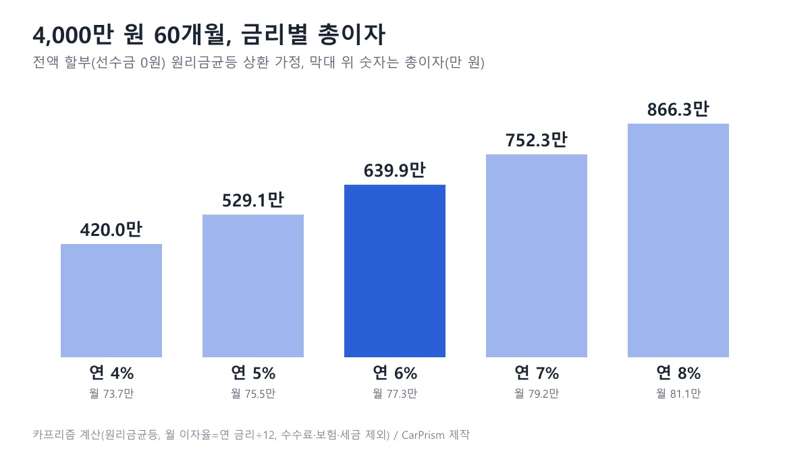
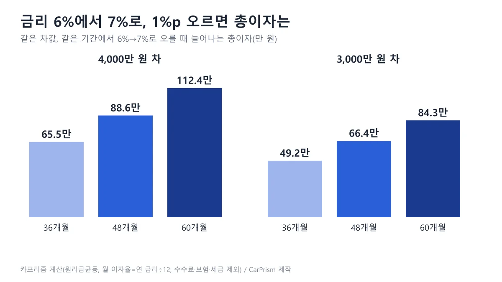
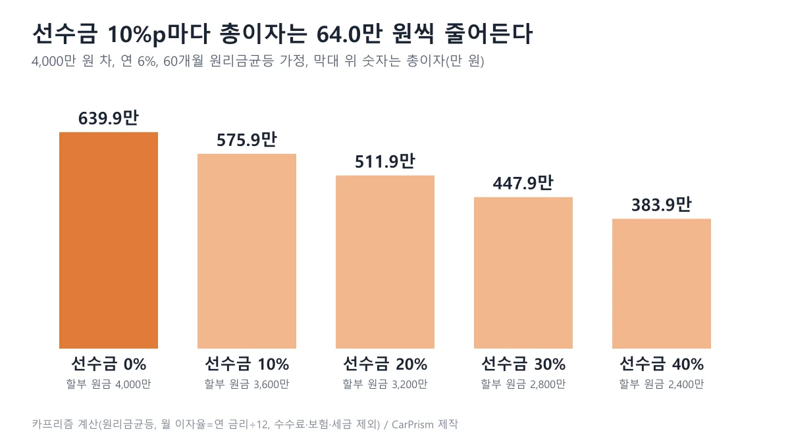
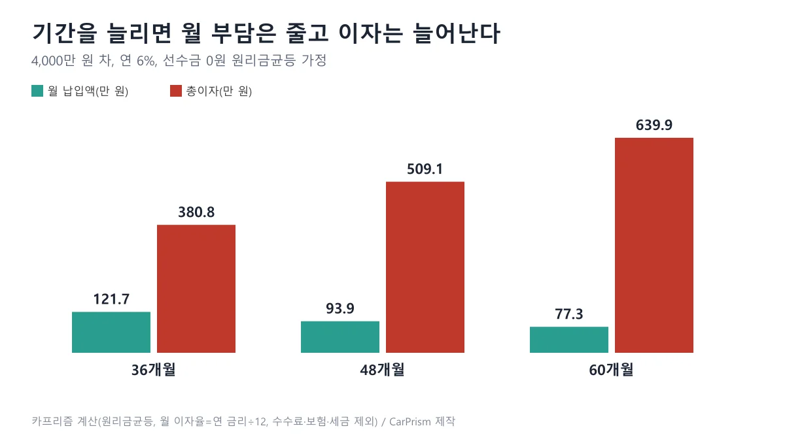
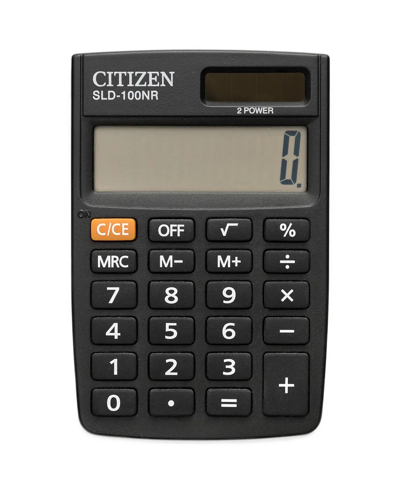
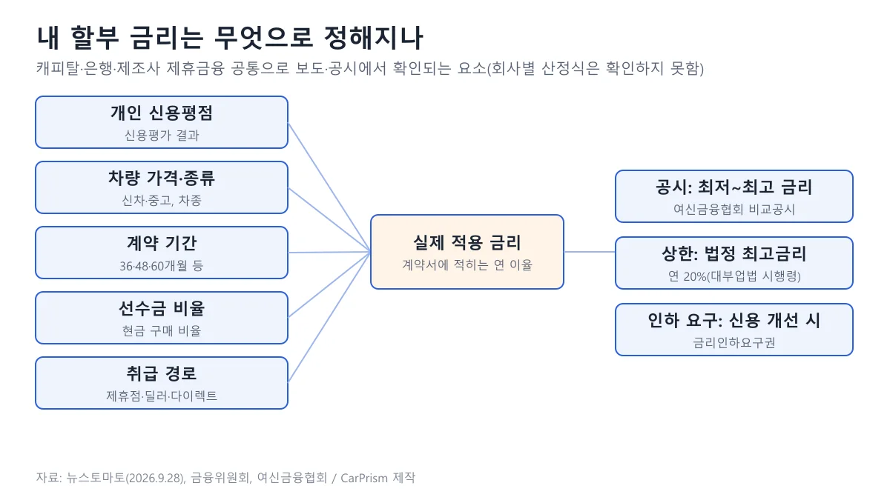

▲ 현대 쏘나타(DN8 부분변경 모델, 주차 촬영). 연식·트림과 가격은 확정하지 않는다 ⓒ Benespit / Wikimedia Commons (CC BY-SA 4.0)
"할부 금리가 1%p만 다르면 4,000만 원짜리 차에서 총이자는 도대체 몇 원이나 달라질까?" 견적서에서는 월 납입액이 1만~2만 원 차이로 보이니 금리 차이가 대수롭지 않게 느껴지기 쉽다. 그런데 기간이 60개월이면 그 작은 월 차이가 곱해져 총이자에서는 100만 원이 훌쩍 넘는다.
이 글은 3,000만 원과 4,000만 원 차를 연 4~8%, 36·48·60개월로 놓고 원리금균등 상환 공식으로 직접 계산한 총이자 표를 먼저 보여 준다. 이어 금리 1%p의 값, 선수금의 효과, 금리가 정해지는 구조와 관련 제도를 확인하고, 계약 전에 물어볼 5가지 질문으로 마무리한다. 가입이나 대출을 권하는 글이 아니며, 숫자는 모두 가정 계산이다(2026년 10월 22일 기준).
1. 3,000만·4,000만 원 차, 금리·기간별 총이자는 얼마일까
4,000만 원을 전액 60개월 할부로 갚으면 연 6%에서 총이자는 약 639.9만 원이다. 아래 표는 같은 방식으로 금리 4~8%, 기간 36·48·60개월을 모두 계산한 값이다.
📍 계산 방법과 가정 (표를 읽기 전에)
- 공식: 월 납입액 = 원금 × i ÷ (1 − (1+i)−n), i는 연 금리÷12, n은 개월 수. 총이자 = 월 납입액 × n − 원금
- 가정: 선수금 0원(차값 전액 할부), 매월 같은 금액을 내는 원리금균등, 금리 고정
- 빠진 것: 취급수수료·인지세·보험료·취득세, 일 단위 이자 계산 차이. 실제 금융사 약관과 1~2만 원 단위로 다를 수 있다
- 표의 각 칸은 월 납입액 / 총이자(단위 만 원)이며 소수 둘째 자리에서 반올림했다
| 기간 | 연 4% | 연 5% | 연 6% | 연 7% | 연 8% |
|---|---|---|---|---|---|
| 36개월 | 118.1 / 251.5 | 119.9 / 315.8 | 121.7 / 380.8 | 123.5 / 446.3 | 125.3 / 512.4 |
| 48개월 | 90.3 / 335.2 | 92.1 / 421.6 | 93.9 / 509.1 | 95.8 / 597.7 | 97.7 / 687.3 |
| 60개월 | 73.7 / 420.0 | 75.5 / 529.1 | 77.3 / 639.9 | 79.2 / 752.3 | 81.1 / 866.3 |
같은 4,000만 원이라도 금리가 4%에서 8%로 4%p 오르면 월 납입액은 60개월 기준 73.7만 원에서 81.1만 원으로 7.4만 원 늘지만, 총이자는 446.3만 원이 늘어난다. 월 납입액에 기간 60을 곱하는 구조라 월 차이가 총액에서 60배로 커지기 때문이다.
| 기간 | 연 4% | 연 5% | 연 6% | 연 7% | 연 8% |
|---|---|---|---|---|---|
| 36개월 | 88.6 / 188.6 | 89.9 / 236.9 | 91.3 / 285.6 | 92.6 / 334.7 | 94.0 / 384.3 |
| 48개월 | 67.7 / 251.4 | 69.1 / 316.2 | 70.5 / 381.8 | 71.8 / 448.3 | 73.2 / 515.5 |
| 60개월 | 55.2 / 315.0 | 56.6 / 396.8 | 58.0 / 479.9 | 59.4 / 564.2 | 60.8 / 649.8 |
3,000만 원 차는 원금이 4,000만 원의 75%여서 총이자도 정확히 75%가 된다(원리금균등에서 이자는 원금에 비례). 예를 들어 연 6%·60개월은 4,000만 원이 639.9만 원, 3,000만 원이 479.9만 원으로 160.0만 원 차이다.

▲ 4,000만 원 60개월, 금리별 총이자와 월 납입액. 카프리즘 제작(가정 계산)
표에서 36개월 연 4%의 총이자가 251.5만 원인데 60개월 연 8%는 866.3만 원이다. 금리와 기간 두 변수가 겹치면 같은 차값에서도 총이자가 3배 이상 벌어진다. 이 중 어느 쪽이 더 크게 작용하는지는 다음 장에서 1%p 단위로 쪼개 본다.
2. 금리 1%p 차이는 몇 원일까 — 기간이 길수록 커진다
4,000만 원 차에서 금리가 1%p 오르면 총이자는 36개월 약 64만~66만 원, 48개월 약 86만~90만 원, 60개월 약 109만~114만 원 늘어난다. 금리 수준이 높을수록 1%p의 값도 조금씩 커진다.
| 차값 | 36개월 | 48개월 | 60개월 |
|---|---|---|---|
| 4,000만 원 | 64.4~66.1 | 86.4~89.6 | 109.1~114.0 |
| 3,000만 원 | 48.3~49.6 | 64.8~67.2 | 81.8~85.5 |
이자는 남아 있는 원금에 매달 붙기 때문에 기간이 길어질수록 원금이 오래 남고, 같은 1%p라도 이자가 붙는 달 수가 많아진다. 그래서 36개월 대비 60개월은 같은 1%p가 약 1.7배 값을 가진다.

▲ 금리 6%→7%에서 늘어나는 총이자. 카프리즘 제작(가정 계산)
월 납입액으로만 보면 4,000만 원·60개월에서 1%p는 월 약 1.8만~1.9만 원이다(연 6%→7%는 77.3만 원에서 79.2만 원). 월 2만 원이 안 되는 차이가 60번 쌓이면 약 112.4만 원이 된다.
카프리즘 시선
앞의 계산에서 드러나는 점은 "월 납입액이 비슷해 보이는 견적일수록 총이자 비교가 더 필요하다"는 것이다. 60개월 연 6%→7%는 월 1.9만 원 차이이지만 총이자로는 112.4만 원 차이이고, 같은 금리에서 36개월과 60개월의 총이자 차이는 259.1만 원(380.8만 원 대 639.9만 원)이다.
견적서에 월 납입액만 적혀 있다면 금리와 기간, 총이자를 함께 받아 같은 기준으로 놓아야 비교가 된다. 다만 이 글의 값은 수수료를 뺀 가정 계산이어서 실제 견적서의 총납입액과는 차이가 날 수 있다.
3. 선수금과 기간은 총이자에 얼마나 영향을 줄까
선수금을 10%p 더 내면 4,000만 원 차·연 6%·60개월에서 총이자가 약 64.0만 원씩 줄어든다. 할부 원금이 줄어든 만큼 이자가 비례해 줄기 때문이다.
| 선수금 비율 | 선수금 | 할부 원금 | 월 납입액 | 총이자 |
|---|---|---|---|---|
| 0% | 0 | 4,000 | 77.3 | 639.9 |
| 10% | 400 | 3,600 | 69.6 | 575.9 |
| 20% | 800 | 3,200 | 61.9 | 511.9 |
| 30% | 1,200 | 2,800 | 54.1 | 447.9 |
| 40% | 1,600 | 2,400 | 46.4 | 383.9 |
이자가 원금에 비례하는 구조라 선수금 10%p마다 줄어드는 이자가 일정하다(64.0만 원). 선수금을 늘리면 대신 계약 시점에 현금이 나가므로, 이자 절감과 당장의 현금 여유를 같이 따져야 한다.

▲ 선수금 비율별 총이자(연 6%·60개월). 카프리즘 제작(가정 계산)
기간을 줄이면 월 부담은 늘고 이자는 줄어든다
같은 4,000만 원·연 6%에서 36개월은 월 121.7만 원에 총이자 380.8만 원, 60개월은 월 77.3만 원에 총이자 639.9만 원이다. 월 44.4만 원을 덜 내는 대신 이자를 259.1만 원 더 내는 셈이다.

▲ 할부 기간별 월 납입액과 총이자. 카프리즘 제작(가정 계산)
내 월 소득에서 감당할 수 있는 월 납입액을 먼저 정하고, 그 안에서 가장 짧은 기간을 고르는 것이 이자 면에서 유리한 방향이다. 다만 기간과 선수금의 이자 효과는 정해진 답이 아니라 현금 흐름과 맞바꾸는 문제다. 할부와 리스, 렌트까지 36개월 총비용으로 견줘 보고 싶다면 36개월 총비용 비교 기사를 참고하자.

▲ 휴대용 전자계산기(Citizen SLD-100NR). 월 납입액과 총이자는 직접 확인해 볼 수 있다 ⓒ LoMit / Wikimedia Commons (CC BY-SA 4.0)
4. 내 할부 금리는 누가, 무엇으로 정할까
실제 적용 금리는 광고에 나오는 최저금리가 아니라 신용평점·차량 가격·계약 기간 등에 따라 개별로 정해진다. 2026년 9월 28일 뉴스토마토 보도는 국회 미래소비자포럼 발표를 인용해 캐피탈 자동차금융의 금리 산정이 "깜깜이"라는 문제를 전했다.
| 상품 | 금리 범위 |
|---|---|
| 현대캐피탈 중고차할부 | 연 3.9~19.5% |
| KB캐피탈 다이렉트 중고차대출 | 연 5.4~16.9% |
| 메리츠캐피탈 중고차론 | 연 4.9~19.9% |
최저금리와 최고금리의 폭이 11.5~15.6%p에 이르는 것은 같은 상품이라도 신용도와 조건에 따라 받는 금리가 크게 갈린다는 뜻이다. 위 범위는 중고차 상품이고, 신차 할부와 은행 자동차대출의 현재 금리는 공시에서 직접 조회하지 못해 이 글에서 다루지 않았다. 뉴스토마토 보도 바로가기

▲ 할부 금리를 좌우하는 요소와 확인 수단. 카프리즘 제작(회사별 산정식은 확인하지 못함)
제휴금융과 딜러 중개에서 생기는 정보 차이
같은 보도가 인용한 소비자와함께 조사(최근 2년 이내 이용자 612명)에서는 금융상품을 알게 된 경로로 딜러 추천을 꼽은 비중이 30.4%였다. 중개수수료를 안내받지 못했거나 기억하지 못한다는 응답이 57.7%, 예상하지 못한 추가 비용을 경험한 응답이 44.6%였다.
응답자의 69.6%는 자신이 받을 수 있는 최저금리를 비교했지만, 실제 이용 상품의 금리를 정확히 안다는 응답은 22.4%에 그쳤다. 이 수치는 해당 조사의 자기 응답이어서 모든 이용자에 일반화할 수 없고, 제조사 제휴금융과 은행 상품을 따로 나눈 수치는 보도에서 확인하지 못했다.
▲ 현대 쏘나타(DN8 부분변경 모델, 주차 촬영). 연식·트림과 가격은 확정하지 않는다 ⓒ Benespit / Wikimedia Commons (CC BY-SA 4.0)
할부 금리 비교는 여신금융협회 공시 사이트의 "자동차할부" 메뉴(여신금융회사의 자동차할부 금융상품 정보를 검색 조건별로 확인)에서 할 수 있다. 세부 조회 항목과 다이렉트 상품 표시 방식은 화면에서 직접 확인하지 못했고, 메뉴는 바뀔 수 있으니 직접 조회하는 것이 정확하다. 여신금융협회 공시 바로가기
5. 법정 최고금리 20%, 청약철회, 금리인하요구권은 무엇을 보장하나
여신금융기관의 법정 최고금리는 연 20%이고, 신용 개선 시 금리인하 요구는 여신전문금융회사에도 법으로 보장된다. 반면 14일 청약철회는 일반 대출과 달리 자동차 할부금융에서는 차량을 이미 받았다면 적용되지 않는다. 제도마다 범위가 다르니 법령 원문으로 확인해야 한다.
| 제도 | 확인된 내용 | 확인하지 못한 것 |
|---|---|---|
| 법정 최고금리 | 대부업법 제15조는 여신금융기관이 시행령으로 정한 율을 넘는 이자를 받지 못하게 하고, 같은 법 시행령 제9조는 그 율을 연 20%로 정한다. 사례금·수수료 등 명칭을 불문하고 대부와 관련해 받는 금액은 이자로 보는 것이 원칙이다(부대비용 등 시행령이 정한 예외 있음). 금융위원회는 2021년 7월 7일부터 24%에서 20%로 낮췄다고 밝혔으며 신규·갱신·연장 계약부터 적용 | 할부금융의 개별 수수료가 예외 부대비용에 해당하는지는 확인하지 못했다 |
| 청약철회 | 금융소비자보호법 제46조는 대출성 상품의 철회 기간을 14일(계약서류를 받은 날 또는 금전·재화 지급일부터)로 정한다. 그러나 시행령 제37조 제1항 제3호 가목은 여신전문금융업법상 시설대여·할부금융·연불판매를 철회 대상에서 빼면서, 철회 기간 안에 해당 계약에 따른 재화(차량)를 제공받은 경우에 한한다고 규정한다. 즉 차량 인도 전이라면 철회 대상에 포함될 수 있지만, 인도받은 뒤에는 이 조항으로 철회할 수 없다고 읽힌다 | 차량 매매계약 자체의 철회 가능 여부, 금융회사별 약관상 더 긴 철회 기간(법은 약정 기간이 더 길면 그 기간 적용)은 확인하지 못했다 |
| 금리인하요구권 | 여신전문금융업법 제50조의13은 여신전문금융회사와 신용공여 계약을 맺은 사람이 재산 증가·신용등급 또는 개인신용평점 상승 등 신용상태 개선이 인정되면 금리인하를 요구할 수 있다고 규정하고, 회사는 계약 체결 전에 이 권리를 알려야 한다. 시행령 제19조의18은 회사가 요구를 받은 날부터 10영업일 이내(자료 보완 기간 제외)에 수용 여부와 사유를 알리도록 한다 | 인하 폭과 수용 기준은 회사별로 달라 확인하지 못했다 |
세 제도는 조건이 모두 다르다. 최고금리는 계약 단계의 상한이고, 청약철회는 자동차 할부에서는 차량 인도 전에만 기대할 수 있으며, 금리인하요구는 신용이 실제로 나아졌을 때 근거 자료를 내야 하는 구조다. 그래서 "써 보고 마음에 안 들면 14일 안에 취소"를 기대하기보다 인도 전에 금리와 총납입액을 확인하는 편이 안전하다.
▲ 현대 그랜저(GN7, 주차 촬영). 연식·트림과 가격은 확정하지 않는다 ⓒ Benespit / Wikimedia Commons (CC BY-SA 4.0)
법령 원문과 개정 이력은 국가법령정보센터에서 볼 수 있다. 국가법령정보센터 금융소비자보호법 바로가기 금융위원회의 최고금리 안내는 아래 버튼에서 확인할 수 있다. 금융위원회 최고금리 보도자료 바로가기 금리인하요구권 제도 설명도 있다. 금융위원회 금리인하요구권 설명 바로가기
이미 할부를 쓰고 있는데 중간에 갚고 싶다면 수수료가 따로 붙는다. 그 계산은 중도상환수수료 면제 기준 기사에서 따로 다뤘다.
6. 계약 전에 확인할 질문 5가지
숫자를 알았으니 견적서와 계약서에서 확인할 항목으로 바꾸자. 아래 5가지를 적어 두고 답을 받으면 같은 기준으로 비교할 수 있다.
✅ 자동차 할부 계약 전 확인 질문 5가지
① 실제 적용 금리는 연 몇 %인가요? 광고의 최저금리가 아니라 내 조건으로 산정된 금리와, 고정인지 변동인지를 확인한다
② 총납입액과 총이자는 얼마인가요? 월 납입액만 보지 말고 기간별 총액을 한 장으로 받아 이 글의 표와 비교한다
③ 취급수수료·중개수수료는 금리에 포함돼 있나요? 별도라면 금액과 지급 방식을 묻는다(보도에서는 수수료를 안내받지 못했다는 응답이 57.7%)
④ 선수금과 기간을 바꾸면 총이자가 어떻게 달라지나요? 선수금 10%p, 기간 12개월 단위로 견적을 다시 받아 본다
⑤ 차량 인도 전 철회 조건, 중도상환수수료, 금리인하요구 방법은 어떻게 되나요? 차량을 받은 뒤에는 법정 철회가 어려울 수 있으니 계약서에 적힌 날짜와 조건, 신청 경로를 확인한다
📍 비교할 때 맞출 기준
- 같은 차값, 같은 선수금, 같은 기간으로 맞춘 견적서끼리만 비교한다
- 월 납입액·총납입액·총이자·수수료 네 칸을 한 줄에 놓는다
- 현재 금리는 여신금융협회 공시나 각 금융사 안내에서 직접 조회한다. 이 글은 특정 금융사와 상품을 추천하지 않는다
- 차 구입 방식 전체(할부·리스·렌트)의 차이는 리스·할부·현금 비교 기사에서 볼 수 있다
7. 이 글이 확인하지 못한 것과 한계
- 현재 시장 금리: 여신금융협회 공시 등에서 현재 신차 할부 금리를 직접 조회하지 못했다. 표의 4~8%는 계산용 예시이며 시장 금리 전망이 아니다.
- 제조사 제휴금융 프로모션 금리: 현재 적용 중인 금리를 날짜와 함께 확인하지 못해 싣지 않았다.
- 금리 산정 방식: 캐피탈·은행·제조사 제휴금융 각각의 내부 산정 기준은 공개 자료에서 확인하지 못했다. 보도와 공시에서 확인되는 요소만 정리했다.
- 법령: 금융소비자보호법 제46조·시행령 제37조, 여신전문금융업법 제50조의13·시행령 제19조의18, 대부업법 제15조·시행령 제9조는 국가법령정보센터 현행 조문(2026년 10월 22일 조회)으로 확인했다. 차량 매매계약의 철회 가능 여부와 금융사별 약관의 철회·인하 절차는 확인하지 못했다.
- 계산: 수수료·보험료·취득세와 일 단위 이자 계산을 반영하지 않았다. 변동금리나 거치형·유예형(잔가 설정) 상품은 계산하지 않았다.
8. 요약
4,000만 원 차를 선수금 없이 60개월 원리금균등으로 갚으면 총이자는 연 4%에서 약 420.0만 원, 연 6%에서 약 639.9만 원, 연 8%에서 약 866.3만 원이다(카프리즘 계산, 2026년 10월 22일 기준). 금리 1%p 차이는 36개월 약 64만~66만 원, 48개월 약 86만~90만 원, 60개월 약 109만~114만 원이며, 3,000만 원 차는 그 75% 수준이다.
선수금은 10%p마다 총이자를 약 64.0만 원(연 6%·60개월 기준) 줄이고, 기간을 36개월로 줄이면 같은 금리에서 총이자가 약 259.1만 원 줄지만 월 납입액은 약 44.4만 원 늘어난다. 실제 금리는 신용평점·차량 가격·기간 등에 따라 달라지며 법정 최고금리는 연 20%다.
계약 전에는 실제 적용 금리, 총납입액과 총이자, 수수료 포함 여부, 선수금·기간별 총이자, 청약철회(자동차 할부는 차량 인도 후 법정 철회 제외)·중도상환·금리인하요구 조건을 확인하자. 현재 금리는 공시에서 직접 조회해야 하며 이 글은 특정 금융사나 상품을 추천하지 않는다.
📚 함께 읽으면 좋은 글